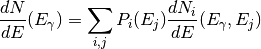
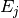
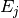

hazma.gamma_ray.gamma_ray¶
-
hazma.gamma_ray.gamma_ray(particles, cme, eng_gams, mat_elem_sqrd=<function <lambda>>, num_ps_pts=1000, num_bins=25)¶ Returns total gamma ray spectrum from a set of particles.
Blah and blah.
Parameters: particles : array_like
List of particle names. Availible particles are ‘muon’, ‘electron’ ‘charged_pion’, ‘neutral pion’, ‘charged_kaon’, ‘long_kaon’, ‘short_kaon’.
cme : double
Center of mass energy of the final state in MeV.
eng_gams : np.ndarray[double, ndim=1]
List of gamma ray energies in MeV to evaluate spectra at.
mat_elem_sqrd : double(*func)(np.ndarray, )
Function for the matrix element squared of the proccess. Must be a function taking in a list of four momenta of size (num_fsp, 4). Default value is a flat matrix element.
num_ps_pts : int {1000}, optional
Number of phase space points to use.
num_bins : int {25}, optional
Number of bins to use.
Returns: spec : np.ndarray
Total gamma ray spectrum from all final state particles.
Notes
The total spectrum is computed using

where
 runs over the final state particles,
runs over the final state particles,  runs over
energies sampled from probability distributions.
runs over
energies sampled from probability distributions.  is
the probability that particle has energy . The
probabilities are computed using hazma.phase_space_generator.rambo. The
total number of energies used is num_bins.
is
the probability that particle has energy . The
probabilities are computed using hazma.phase_space_generator.rambo. The
total number of energies used is num_bins.Examples
Example of generating a spectrum from a muon, charged kaon and long kaon with total energy of 5000 MeV.
>>> from hazma.gamma_ray import gamma_ray >>> import numpy as np >>> >>> particles = np.array(['muon', 'charged_kaon', 'long_kaon']) >>> cme = 5000. >>> eng_gams = np.logspace(0., np.log10(cme), num=200, dtype=np.float64) >>> >>> spec = gamma_ray(particles, cme, eng_gams)